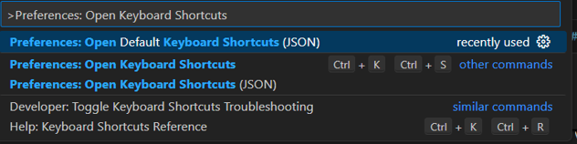
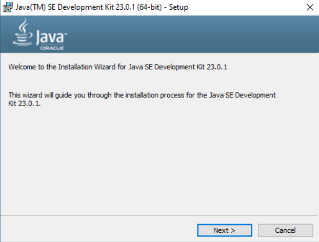

ÍNDICE:
Instalar y Configurar IDEs
En los siguientes apartados veremos paso por paso cómo instalar programas software que proporcionan herramientas y funcionalidades para ayudar a los programadores a escribir, depurar y mantener código de manera más eficiente, más conocidos como IDEs. Los IDEs integran varias herramientas que normalmente se usarían por separado, como un editor de código, un compilador o intérprete, y un depurador, en una sola interfaz de usuario. Esto facilita el proceso de desarrollo al centralizar las tareas más comunes en un solo lugar.
¿Qué son los Módulos?
Los módulos se denominan componentes o secciones específicas que permiten que el entorno ofrezca diferentes funcionalidades para ayudar en el proceso de desarrollo de programas. También tienen otros nombres como extensiones o más conocido como plugins.
Visual Studio Code

Para instalar Visual Studio Code tendrás primero que ir a la página oficial de Visual Studio Code, una vez alli te instalas el instalador según que caracteristicas tenga tu equipo y que version quisieras utilizar. Después aceptas los términos de licencia y sigues lo que te va indicando el instalador hasta que se instale el programa.


Instalación de diferentes módulos de interés:
Auto Rename Tag
Este módulo que nos ofrece Visual Studio sirve para cuando abres una etiqueta esta automáticamente cambiara la etiqueta de cerrado así no tendrás que buscarla para renombrarla de manera manual y de esta manera ahorrándote algo de tiempo, además que soporta también etiquetas XML y JSX. Descargarla es muy sencilla ya que solo tienes que ir al apartado de extensiones y buscarla manualmente desde allí.
Live Server
Esta extensión es muy útil ya que cuando desarrollamos es muy importante que observemos como es nuestra interfaz con fin de generar una gran experiencia ya que despliega un servidor de desarrollo la cual nos va a monitorear cada cambio que hagamos con cada guardado y nos mostraras estos nuevos cambios en el navegador en tiempo real. Descargarla es muy sencilla ya que solo tienes que ir al apartado de extensiones y buscarla manualmente desde allí.

Error Lens
La extensión Error Lens nos ayudara mucho a la hora de cuando estemos en el proceso de desarrollo y tengamos múltiples errores por ejemplo faltas de ortografías, olvidar un paréntesis o un punto y coma, cambiar el nombre de una variable y no cambiarla en todo el código u olvidar algún componente, pues bien, esta herramienta nos permite ver estos errores en Visual Studio Code, añadiendo también que nos da una descripción del error para que podamos corregirlo sin perder mucho tiempo. Descargarla es muy sencilla ya que solo tienes que ir al apartado de extensiones y buscarla manualmente desde allí.
¿Como eliminar dichos módulos de Visual Estudio Code?
Pues este paso es muy sencillo ya que es exactamente igual que instalarlos, vas al apartado “extensiones” pones en el buscador que tiene el nombre del módulo que deseas desinstalar y le das a “Uninstall”.

¿cómo personalizar la visualización en Visual Studio Code?
Cambiar el tema de color:
-Ve a "View" y le das a "Command Palette"
-Escribe "Color Theme" y selecciona "Preferences: Color Theme".

-Aparecerá una lista de temas. Puedes elegir el que más te guste, como "Dark+ (default dark)", "Light+ (default light)", "Abyss", "Monokai", entre otros.
-Aqui vemos un ejemplo de cómo se ha personalizado al color rojo.

Modificar la fuente y tamaño de texto
Puedes cambiar el tipo de fuente y el tamaño de la fuente en el editor para ajustarlo a tus preferencias.
-Abre la configuración mediante "File" y le das a "Preferences" y luego a "Settings".

-Busca "Font"
-Aquí podrás cambiar el tipo de fuente, el tamaño de la fuente y otras opciones relacionadas con la fuente.
Personalizar atajos del teclado
Si deseas modificar los atajos de teclado predeterminados o agregar nuevos atajos personalizados, puedes hacerlo fácilmente:
-Abre la paleta de comandos
-Escribe "Preferences: Open Keyboard Shortcuts (JSON)" y selecciona esta opción para abrir el archivo keybindings.json, donde podrás agregar o editar atajos manualmente.
Configuración del sistema de actualización
En Windows, VS Code se actualiza automáticamente por defecto, pero puedes controlar algunas configuraciones desde los ajustes:
Verificar la actualización manualmente:
-Abre Visual Studio Code.
-Ve a Ayuda (Help) en la barra de menú y selecciona Buscar actualizaciones (Check for Updates). Si hay una actualización disponible, VS Code te notificará y podrás instalarla.
Cambiar la configuración de las actualizaciones automáticas:
Para cambiar la configuración de las actualizaciones automáticas, puedes editar el archivo de configuración settings.json:
1. Abre VS Code.
2. Haz clic en Archivo > Preferencias > Configuración (File > Preferences > Settings).
3. En la barra de búsqueda, escribe update.
4. Aquí verás algunas opciones como: -update.channel: Aquí puedes elegir el canal de actualización. El valor predeterminado es default, pero puedes cambiarlo a insider si deseas recibir las actualizaciones más recientes pero inestables. -update.mode: Esta opción puede ser configurada como default (actualizaciones automáticas) o manual (actualizaciones solo cuando lo desees).
Caracteristicas comúnes y específicas:
Visual Studio Code es un editor de código abierto y ligero, multiplataforma, diseñado para ser rápido y altamente personalizable.
Características comunes:
-Multiplataforma: Funciona en Windows, macOS y Linux.
-Soporte de múltiples lenguajes: Mediante extensiones, soporta lenguajes como JavaScript, Python, entre otros.
-Extensiones: Permite agregar funcionalidades adicionales como nuevas herramientas o soporte para lenguajes.
-Depuración integrada: Permite depurar el código directamente desde el editor.
-Git integrado: Soporte para operaciones Git directamente en el editor.
-IntelliSense: Autocompletado y sugerencias de código inteligentes.
-Interfaz personalizable: Permite cambiar temas, disposición y accesibilidad.
Características específicas:
-Vista dividida: Trabaja con múltiples archivos en paneles horizontales o verticales.
-Terminal integrada: Ejecuta comandos directamente dentro del editor.
-Soporte remoto: Edita código en servidores, contenedores o entornos remotos.
-Live Share: Colaboración en tiempo real con otros desarrolladores.
-Refactorización de código: Herramientas para mejorar y reestructurar el código sin errores.
Ventajas de Visual Studio Code:
-Ligero y rápido: Es un editor de código rápido, con un rendimiento superior en comparación con IDEs más pesados como Visual Studio o Eclipse.
-Multiplataforma: Funciona en Windows, macOS y Linux, lo que lo hace accesible a una gran cantidad de usuarios.
-Extensibilidad: Gracias a su enorme biblioteca de extensiones, puedes agregar fácilmente nuevas funcionalidades, soportar más lenguajes y mejorar tu flujo de trabajo.
-Depuración integrada: La capacidad de depurar código directamente desde el editor facilita el proceso de desarrollo y reduce la necesidad de herramientas adicionales.
-Integración con Git: El soporte nativo de Git permite un manejo eficiente de control de versiones sin tener que salir del editor.
-Interfaz personalizada: Ofrece temas y configuraciones adaptables, permitiendo que cada usuario adapte la experiencia según sus preferencias.
-Colaboración en tiempo real: Con la extensión Live Share, puedes colaborar con otros desarrolladores de manera instantánea, lo que mejora la productividad en equipos.
Inconvenientes de Visual Studio Code:
-No es un IDE completo: Aunque tiene muchas características avanzadas, no es un IDE en el sentido completo, por lo que algunas funciones más avanzadas (como diseño de interfaz gráfica o simulación) pueden requerir herramientas adicionales.
-Consumo de memoria con extensiones: Si se instalan demasiadas extensiones, VS Code puede volverse más lento o consumir más memoria.
-Configuración inicial: Aunque es fácil de usar, para aprovechar al máximo sus capacidades, puede requerir tiempo en la configuración y personalización (instalación de extensiones y ajustes).
-Limitaciones en el manejo de proyectos grandes: Para proyectos muy grandes o complejos, VS Code puede ser menos eficiente que un IDE especializado debido a la falta de algunas herramientas integradas (como análisis de código estático avanzado).
-Falta de algunas herramientas avanzadas: Aunque es extensible, algunas características avanzadas, como el diseño visual o el modelado de bases de datos, requieren plugins externos o no están tan bien integradas como en un IDE completo.
NetBeans
-Para instalar NetBeans tendrás primero que ir a la página oficial de NetBeans, una vez alli te instalas el instalador según que caracteristicas tenga tu equipo y que version quisieras utilizar.
INCIDENCIA: NetBeans requiere que en el equipo este instalado una versión de Java superior a la versión JDK 8.
Una vez tengamos ya instalado nuestra version de JDK correspondiente el instalador de NetBeans ya nos va dejar instalar el programa.
Instalación de diferentes módulos de interés:
¿Como instalar modulos en NetBeans?
Es muy facil, una vez tengamos el programa abierto en la pantalla pricipal le damos al botón de "Tool" y le daremos a la opción "Plugins" nos abrirá una ventana con todos los módulos dsipónibles.
Backlog Support
Está diseñado para integrar la gestión de tareas y proyectos directamente en el entorno de desarrollo del IDE.Su propósito principal es permitir que los desarrolladores gestionen el backlog de tareas de un proyecto de software sin tener que salir de NetBeans o usar herramientas externas como Jira, Trello, u otros sistemas de gestión de proyectos.
Color Codes Preview
Sirve para proporcionar una vista previa de los códigos de colores directamente en el editor de código. Esto es especialmente útil cuando estás trabajando con estilos CSS, archivos de configuración, o cualquier otro código que implique especificar colores en formatos de código.
-Ejemplo de un codigo con Color Codes Preview
Textlint Support
está diseñado para ayudar a los desarrolladores y escritores a mejorar la calidad del texto en sus archivos, especialmente en aquellos que contienen contenido escrito o documentación. Textlint es una herramienta que permite realizar análisis gramatical y de estilo en textos, y este plugin integra Textlint en NetBeans para facilitar el proceso.
¿Cómo eliminar los módulos de NetBeans?
Lo primero que tienes que hacer es ir al botón de "Tool" y le daremos a la opción "Plugins" le damos a la sección "Installed" y seleccionamos el módulo que deseamos eliminar y le damos a "Uninstall"
¿cómo personalizar la visualización en NetBeans?
Nos iremos otra vez a "Tools", le damos a "options" y a "Appearance" y elejiremos el tema que nos guste.
Caracteristicas comúnes y específicas:
Características Comunes de NetBeans:
-Código Abierto y Gratuito: Es un IDE gratuito y de código abierto.
-Multilenguaje: Soporta Java, PHP, JavaScript, C/C++, HTML, y más mediante plugins.
-Editor Avanzado: Incluye autocompletado, resaltado de sintaxis y refactorización.
-Integración con Control de Versiones: Soporta Git y SVN para gestión de repositorios.
-Depurador: Depuración gráfica con seguimiento de variables y puntos de interrupción.
-Interfaz Intuitiva: Fácil de usar para desarrolladores novatos y expertos.
-Extensibilidad: Amplia variedad de plugins disponibles.
-Soporte para Frameworks Populares: Integra herramientas como Spring, JavaFX, y Maven.
Características Específicas de NetBeans:
-Soporte Nativo para Java: Especializado en el desarrollo de aplicaciones Java.
-JavaFX Scene Builder: Herramienta gráfica para crear interfaces con JavaFX.
-Maven y Gradle: Soporte integrado para gestión de proyectos y dependencias.
-Desarrollo Web: Herramientas para HTML5, JavaScript, y PHP.
-Base de Datos: Interacción con bases de datos como MySQL y PostgreSQL.
-C/C++: Soporte para el desarrollo en C/C++.
-Pruebas Unitarias: Integración con JUnit y TestNG para pruebas de código.
Ventajas de Netbeans:
-Gratuito y de código abierto.
-Soporte para multilenguajes (Java, PHP, C/C++, HTML, etc.).
-Excelente para Java con integración de JavaFX y frameworks.
-Gestión de proyectos con Maven y Gradle.
-Depurador gráfico avanzado.
-Interfaz intuitiva y fácil de usar.
-Extensible con plugins.
-Gran comunidad y soporte.
Inconvenientes de Netbeans:
-Alto consumo de recursos y rendimiento lento en proyectos grandes.
-Interfaz menos moderna que otros IDEs.
-Ecosistema de plugins limitado comparado con otros IDEs.
-Sistema de actualización no siempre fluido.
-Curva de aprendizaje para nuevos usuarios.
-Rendimiento reducido con proyectos complejos.
IntelliJ IDEA
Para instalar IntellijIDEA tendrás primero que ir a la página oficial de IntellijIDEA, una vez alli te instalas el instalador según que caracteristicas tenga tu equipo y que version quisieras utilizar. Después aceptas los términos de licencia y sigues lo que te va indicando el instalador hasta que se instale el programa.
¿Como instalar módulos en IntelljIDEA?
Es de los pasos mas sencillos ya que cuando estés en la ventana principal del programa ha simple vista se verá la opción "plugins" en la zona izquierda.
JetBrains AI Assistant:
Es una herramienta integrada en el IDE IntelliJ IDEA que utiliza inteligencia artificial para asistir a los desarrolladores mientras programan. Este complemento tiene como objetivo hacer que la experiencia de desarrollo sea más eficiente, productiva y fluida.

Security Analysis by Qodana
Proporciona análisis de seguridad para el código fuente. Este plugin está diseñado para ayudar a los desarrolladores a identificar y corregir vulnerabilidades de seguridad en su código de manera temprana, durante el proceso de desarrollo.
¿Cómo eliminar los módulos de Intellj IDEA?
En el mismo apartado de los plugins le damos al apartado "Installed" y seleccionaremos el plugin que deseamos eliminar y le damos a la opción "Disabled"
¿Cómo personalizar la visualización de IntellJ Idea?
Para personalñizar lña visualización de Intellj Idea debemos ir a los ajustes y la priemra opción que nos sale es "Appearance" y le damos a "Theme" y ahi elejiremos nuestro color a gusto.

¿Cómo configurar el sistema de actualización de Intellj Idea?
-En el panel de configuración, selecciona Appearance & Behavior > System Settings > Updates.
Pudes ajustar la forma en que el IDE verifica y gestiona las actualizaciones. Esto te permite asegurarte de que siempre tengas la versión más reciente del software y de los complementos, o bien configurarlo para que se actualice según tus preferencias.
Configurar y Personalizar Atajos de Teclado de Intellj Idea
En Windows/Linux, ve a File > Settings, Aquí podrás ver el keymap actual, que muestra todos los atajos asignados y sus respectivas acciones.
Caracteristicas comúnes y específicas:
Características Comunes de Intellj Idea:
-Soporte multilenguaje: Java, Kotlin, JavaScript, Python, y más.
-Autocompletado inteligente y análisis de código en tiempo real.
-Refactorización y depuración avanzadas.
-Integración con control de versiones (Git, SVN).
-Herramientas para bases de datos y ejecución de consultas SQL.
-Soporte para pruebas con frameworks como JUnit y TestNG.
Características Especificas de Intellj Idea:
-Soporte avanzado para frameworks Java
-Desarrollo web: HTML, CSS, JavaScript, React, Angular.
-Desarrollo de microservicios con Docker y Kubernetes.
-Integración con la nube (AWS, Azure).
-Soporte avanzado para bases de datos y SQL.
-Soporte para otros lenguajes backend como PHP, Ruby, Python, Go.
-Herramientas para CI/CD y DevOps.
Ventajas de Intellj IDEA
-Autocompletado inteligente y asistencia al código
-Soporte para múltiples lenguajes y frameworks (Java, Kotlin, JavaScript, Spring, React).
-Herramientas de refactorización y depuración avanzada.
-Integración con control de versiones y bases de datos.
-Interfaz intuitiva y opciones para mejorar la productividad (macros, atajos, Live Templates)
Desventajas de IntelliJ IDEA:
-Alto consumo de recursos (memoria y CPU).
-Curva de aprendizaje algo pronunciada.
-Costo de la versión Ultimate (de pago).
-Puede volverse lento en proyectos grandes.
Eclipse
Para instalar Eclpise tendrás primero que ir a la página oficial de Eclipse, una vez alli te instalas el instalador según que caracteristicas tenga tu equipo y que version quisieras utilizar. Tenemos varios paquetes de instalación, en este caso instalaremos el primero. Después aceptas los términos de licencia y sigues lo que te va indicando el instalador hasta que se instale el programa.
Una vez haymos instalado de la pagina web oficial el instalador nos mostrará varias opciones.
En nuestro caso elegiremos la opción de "Eclipse IDE for PHP Developers"